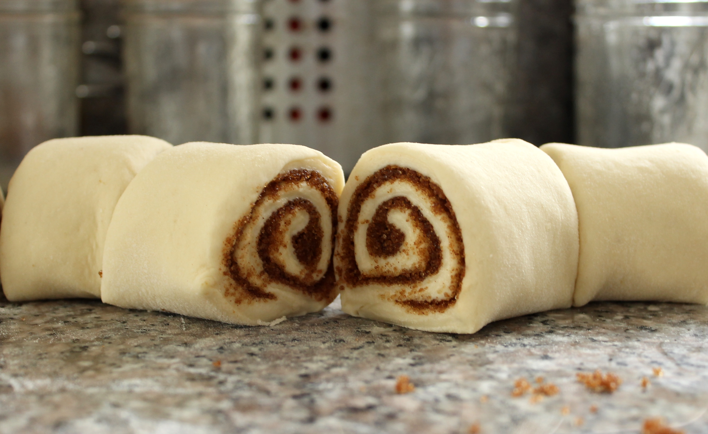

A delicious yet quick sweet treat for weekday mornings. Perfect with a cup of hot,
black coffee!
Be sure to check the pantry and fridge to make sure you have all ingredients on
hand before beginning
To make this sweet treat, you'll need the following ingredients and appliances.
Ingredients
- 1 tube of Refridgerated bread roll dough
- 1 stick Butter
- 1 stick Margarine
- ½ cup Sugar
- 2 tbsp Cinnamon
- 2 tbsp Flour
Appliances
Tools
- Knife
- Rolling pin
- Bowl
- Whisk
-
Flour your workspace (the counter) with a light dusting of flour.
-
Open your bread roll dough and drop it onto the floured workspace.
-
Roll out the dough until it is about ¼ inch thick.
-
Melt butter in bowl and pour evenly onto dough.
-
Sprinkle sugar and cinnamone evenly over buttered dough.
-
Roll up the dough, starting on one end until you have a log-shape. (See figure
1 for assistance)
-
Cut roll into 6 pieces and arrange on baking sheet.
-
Bake for 15-20 minutes or until golden brown, then let cool for 10 minutes and
enjoy!
Figure: Dough rolled and ready to cut
